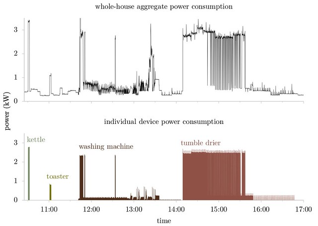

Table of Contents
1 Ethical Implications of Data Science
People live and die every day on the basis of moral decisions made by others. Contingency Management (to name one example) is an effective method for managing drug addiction which is not widely used in the United States because of the perception of a moral hazard.
Moral issues are not limited to minor adjustments in treatment practices either: at various moments in the history of human beings radical acts of creation and destruction have been precipitated by acts of moral theorizing. The French Revolution, The Genocide of the Jews and other peoples in Nazi Germany, Soviet Gulags and America's own for profit prison and jail system (where, in some places, Sheriffs get to keep any money they don't use to feed inmates) have had a genuine, powerful, destructive effect on human beings.
Things aren't always negative. Civil Rights movements in the mid to late period of the last century were successful, after much struggle, in mitigating many of the negative effects of deeply corrupt systems.
The critical point is that moral judgements were at the heart of all these events.
2 Moral Philosophy
Most people do not entertain serious thought about their moral philosophy. When we pick up our moral intuitions from religion or culture, they are more or less passively received. And yet most of us have the capacity for moral disgust, though it isn't obvious to me that our instinctual intuitions are any more effective at perceiving moral circumstances than our brains are.
Good Books:
- JL Mackie's Ethics
- Peter Singer's Practical Ethics
- Rachels and Rachels' The Elements of Moral Philosophy
I enjoy the work of Martha Nussbaum.
Luckily we don't need much by way of moral philosophy to appreciate the ethical implications of data science.
3 Responsibilities
Data Scientists have two primary moral responsibilities (in my opinion). They are related. I tend to conceptualize these issues in terms of explicit and implicit contracts.
3.1 Responsibility to the Truth
3.1.1 Social Contracts
One of the marvellous things about the contemporary world is that society sets aside a fairly large amount of treasure to support a class of citizens whose only responsibility is the pursuit of various forms of truth.
A wonderful book of philosophy, "The Grasshopper" by Bernard Suits, defines a game as "Any activity that involves the voluntary pursuit of a goal by less than efficient means." A good argument can be made that mathematics fits this definition - and yet we set aside money each year for thousands of mathematicians to play mathematical games.
The implicit contract between an academic and society is thus that the academic pursues and reports on the pursuit of truth.
If you work in the private sector as a statistician or a data scientist, you are being paid to say true things about the data you analyze.
3.1.2 Fudging Data Explicitly
At the same time, our society is almost entirely based on incentives. And thus I can virtually guarantee that you will encounter, at some point in your lives, if not already, a circumstance in which you will feel pressure to aver something as true when you don't have adequate evidence.
The trouble is that we are often rewarded for positive results rather that correct results. New, positive, results are much more publishable than old confirmations or disconfirmations.
The best advice I can give you here is learn to identify lost causes quickly so that you can cut your losses. Also learn to publish negative results. Consider journals which exist entirely for that purpose, like "The Journal of Negative Results." or "The Journal of Negative Results in BioMedicine."
One benefit of academia is that you can usually count on your colleagues to find and criticize incorrect results and thus, despite publish or perish, there are serious long term career consequences to bad science.
3.1.3 The Private Sector
In the private sector, on the other hand, you will face both a pressure to report a positive result and a wild willingless to interpret your results positively if doing so will advance a project upon which someone has staked political capital.
Unlike the working as an academic, data scientists are unlikely to stay at one job for more than five years, and the results of their previous work are not generally publically available. Thus, it is much easier to pass of bad results as good ones and assume that when things eventually do go wrong you'll be long gone.
The best way to avoid this pressure is to learn to forcefully and accurately present correct results, no matter the political implications.
Also, learn to resist pushes to go back to the drawing board without new data.
3.1.4 P-Hacking
Literally modifying data or overstaing positive results is clearly unethical. This is what we used to call a sin of commision back in Catholic School: you know what you are up to and you should feel bad about it.
A much more insidious form of Academic Fraud corresponds to sins of omission, where you report results which would not stand up to due diligence.
Some suggested reading:
- The garden of forking paths: Why multiple comparisons can be a problem, even when there is no “fishing expedition” or “p-hacking” and the research hypothesis was posited ahead of time - Andrew Gelman†and Eric Loken, 14 Nov 2013
- [[https://slate.com/technology/2013/07/statistics-and-psychology-multiple-comparisons-give-spurious-results.html][Too Good to Be True
Statistics may say that women wear red when they’re fertile … but you can’t always trust statistics. By Andrew Gelman July 24, 2013]]
It is tempting to view data science as a "fishing expidition" in which we get a data set and we dig into it until such a time as we find a good result.
But we know from our model characterization lessons that even the simplest sort of modelling exercise depends on a number of choices like:
- How we eliminate outliers
- How we define categorical variables from continua
- What variables we choose to include in our model
- How we perform our train and test split
- What methods we choose to apply (eg, logistic regression vs linear discriminant analysis vs gradient boosted regression)
With enough such decisions we can, consciously or subconsciously, pick out a sequence of events which leads to a positive result which, if the analysis we're repeated with newly collected data, might not be repeatable.
3.1.5 Pre-registration
One solution to this problem is "pre-registration". When studies are pre-registered the researcher designs a research plan before the data is even in their hands. Thus it cannot be tailored either consciously or subconsciously to produce a positive result - a spurious positive result in this case is a genuine statistical fluke.
Many Journals support pre-registration these days. Consider using them. Careers have been ruined by p-hacking. Pre-registration makes your short term job harder but will give you a more robust long term career.
3.1.6 Informal Pre-registration
Even if you aren't publishing in a journal, consider informal pre-registration. Design your research plans ahead of time, Post them on your blog or share them with your manager. Get comfortable explaining what a p-value is so that stake holders can understand the issues. Don't wait to do this.
3.1.7 Git Discipline
At the very least you must maintain a careful record of your research decisions. Hence the emphasis on small, well documented, commits and a clean git history. Think of this as post-registration: you have a comprehensive record of all the things you have tried. If your source code is available online, then anyone can see your research history. This might help keep you honest.
3.2 Obligation to Society
This is a tricky one to discuss because there isn't all that much agreement on precisely what obligations we have to society. Unfortunately, from my point of view, if you work in the private sector you will inevitable encounter people who believe that their social obligations are minimal or are met entirely by the pursuit of their own self interest.
It isn't my place to make a comprehensive case for a more cooperative conception of your role in the world but I will point out that most human beings, even those who claim otherwise, fail spectacularly to demonstrate, at an intuitive level, the moral intuitions suggested by the hardest nosed Randian Libertarian.
The philosopher Peter Singer makes this kind of practical moral argument quite easily, though I disagree with some broad elements of his philosophy.
In any case, I want to encourage you to consider the implicit contracts that people enter into constantly in order to function in the world.
3.2.1 Case Study : Metering
Most of us are familiar with the idea of metering services. For instance: water. We get a bill at the end of the month which reflects how much water we've used. Explicitly or implicitly we have some understanding about this process. When I was a kid, a person came to our house once or twice a month to read the digits on the meter and these numbers would inform the bill.
Most people still think of their water meter as primarily metering.
However, contemporary smart meters record water usage at an hourly or even quarter hourly rate and the data may be collected and stored forever by the water company or even third parties.
Things really get interesting when you consider the possibility of disaggregating the data.

Figure 1: Meter Disaggregation uses a model to convert a string of consumption values to usages by different appliances.
It turns out disaggregating water data is very difficult because the temporal resolution of the recordings are typically much too low to be appropriate for the algorithms that work.
Disaggregation is often portrayed as beneficial to the end user:
- It might allow them to understand how they use their resources
- It can detect leaks or otherwise malfunctioning devices
But it is also a pretty big invasion of your privacy. Its easy to come up with salacious ways this data might be employed: maybe someone's wife is away for the weekend but the monthly disaggregation report shows an unusual number of showers at the house for the same time period.
But its also not too hard to think of less nice possibilities: a dissident living in a repressive regime might be exposed because water usage peaks during the weekends, when they host meetings to organize anti-government actions.
I would argue that even when a company or researcher has access to data, if the data was collected under a set of presumptions held by the user, then analysis should be restricted to that assumption.
You may find it difficult to resist the pressure to break this rule in practice.
3.2.2 Case Study: Racial Bias in Facial Recognition
Facial Recognition is big business and sadly its already being applied in many places.
I admit, even I was surprised when I saw this demo:
Facial Recognition Tech sucks, however. Its not that it can't recognize faces, it is that it is racially and gender biased in how false positives and false negatives are distributed.
Luckily the government isn't entirely asleep at the wheel:
False positives:Using the higher quality Application photos, false positive rates are high-est in West and East African and East Asian people, and lowest in Eastern European in-dividuals. This effect is generally large, with a factor of 100 more false positives between countries. However, with a number of algorithms developed in China this effect is re-versed, with low false positive rates on East Asian faces. With domestic law enforcement images, the highest false positives are in American Indians, with elevated rates in African American and Asian populations; the relative ordering depends on sex and varies with algorithm.
We found false positives to be higher in women than men, and this is consistent across algorithms and datasets. This effect is smaller than that due to race.
We found elevated false positives in the elderly and in children; the effects were larger inthe oldest and youngest, and smallest in middle-aged adults"
But these technologies are still actively being pitched.
In the US a run in with the police can be deadly.
So the lesson here is: "Don't try to sell some data analysis unless you really understand the biases involved and even then, ask yourself if the world would really be a better place if it were out in the world."
My take would be your time would be better spent contacting your representatives to ban this technology.
But why is it that these technologies have such a predictable bias in favor of the majority population? It all comes down to training data, which itself often contains biases. In the case of facial recognition the issue appears to be less training data for non-majority faces and thus a higher than expected rate of error for non-majority faces.
4 Concluding Remarks
It is your job to tell people the truth to the best of your ability, including tricky ideas like uncertainty therein.
The challenges here are manifold:
- It is hard to figure out what is true.
- It is hard to explain uncertainty to lay stakeholders
- There are political pressures for positive results in both academia and the private sector, though of different forms
- Data Science is rarely as neutral as it looks because it often relies on training data of dubious quality.
I think the best ethical advice I can give you is to compartmentalize yourself as a data/scientist. You might be seeking funding for your startup as its founder, but when you are operating as the data scientist, stick stricly to that role, no matter how much investors want to see a miracle. This is really the only way to meet your long term explicit and implicit obligations.